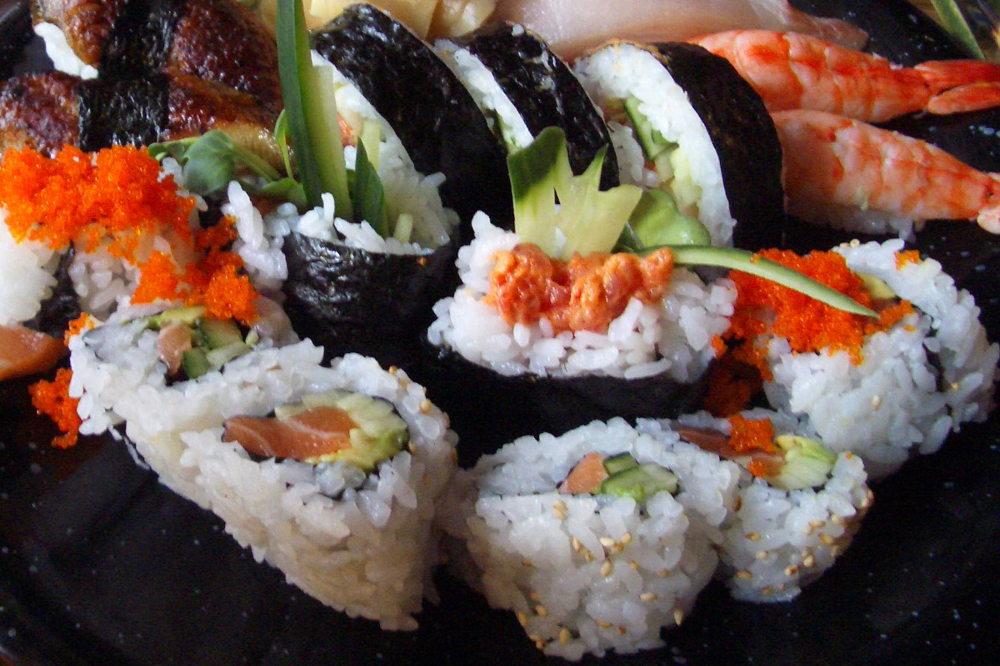
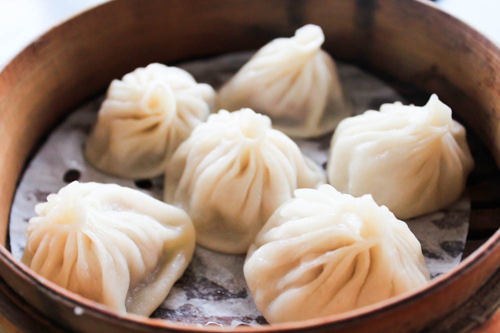
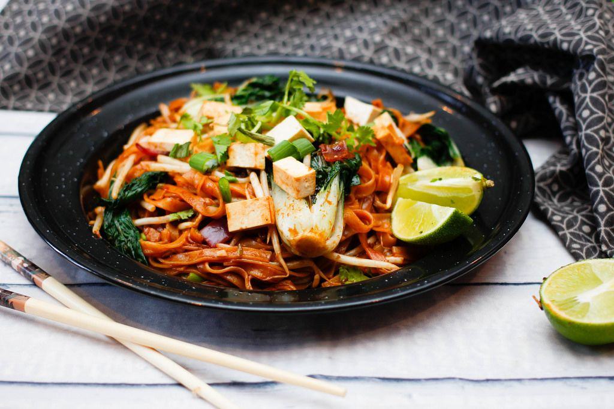
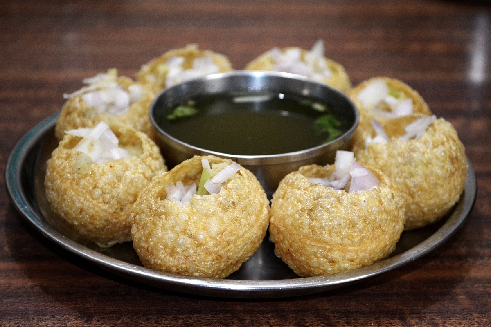

O lugar certo para descubrir sobre comida de outros países e suas curiosidades
Comida mais famosa de alguns países da Ásia
Bem-vindo ao nosso universo culinário, onde exploramos os sabores exóticos e fascinantes da Ásia! Embarque em uma jornada gastronômica conosco e descubra as curiosidades mais deliciosas que cada país asiático tem a oferecer. De pratos icônicos a segredos culinários bem guardados, mergulharemos na riqueza e diversidade das tradições alimentares desta região vasta e incrivelmente variada. Prepare-se para saborear a história, as técnicas únicas e, é claro, as receitas autênticas que tornam a culinária asiática tão extraordinária. Vamos explorar juntos o mundo encantador das delícias asiáticas!
Japão - Sushi
O sushi é uma comida originalmente japonesa que conquistou a gastronomia do mundo todo. Geralmente, composto por um recheio, uma camada de arroz e uma tira de nori.
Apesar de existirem sushis tradicionais, como nigiri e temaki, alguns restaurantes, por vezes, alteram recheios e sabores criando versões próprias e adicionando ao prato um toque da culinária local.

Atualmente, a gastronomia dispõe de uma grande variedade de sushis, oferecendo ao público, inclusive, sushis veganos e fritos.
Confira os principais tipos de sushi
Nigirizushi
gunkanzushi
Makizushi
Hossomali
Shakemaki
Kappamaki
Tekkamaki
Uramaki
Um fato bastante curioso sobre o sushi é que, originalmente, ele era preparado de forma bastante diferente.
Os japoneses costumavam "embalar" o peixe no arroz e deixá-lo em repouso tempo suficiente para que um processo de fermentação tivesse lugar.
China - Xiaolongbao
Xiaolongbao é um delicioso bolinho chinês que tem conquistado o paladar de pessoas ao redor do mundo. Originário da região de Xangai, esse prato é conhecido por sua massa fina e delicada, recheada com carne suculenta e um caldo saboroso. É uma iguaria que combina texturas e sabores únicos, tornando-se uma opção irresistível para os amantes da culinária chinesa.
Xiaolongbao é um delicioso bolinho chinês que tem conquistado o paladar de pessoas ao redor do mundo. Originário da região de Xangai, esse prato é conhecido por sua massa fina e delicada, recheada com carne suculenta e um caldo saboroso. É uma iguaria que combina texturas e sabores únicos, tornando-se uma opção irresistível para os amantes da culinária chinesa.

O Xiaolongbao é um prato tão apreciado na China que existe até mesmo um festival dedicado a ele, chamado “Festival do Xiaolongbao”. Além disso, o Xiaolongbao também é conhecido como “bolinho de sopa”, devido ao caldo saboroso que é liberado ao morder o bolinho.
Tailândia - Pad Thai
Pad thai, ou phad thai, é um prato de macarrão de arroz frito comumente servido como comida de rua e na maioria dos restaurantes da Tailândia como parte da culinária do país. Geralmente é feito com macarrão de arroz, frango, carne ou tofu, amendoim, ovo mexido e broto de feijão, entre outros vegetais.

Suas variações são incontáveis: pode vir com uma folha de banana ao lado, com um ovo cobrindo todo o prato, pode ser mais doce ou mais ácido, mais picante ou suave. Há versões vegetarianas, com camarões frescos ou secos ou acompanhadas de brotos de feijão. Mas, em geral, é a proporção de molhos de tamarindo e peixe que dão um sabor especial para cada receita, guardada, muitas vezes, como um segredo.
Índia - Pani Puri
O Pani Puri é um famoso petisco da culinária indiana, conhecido por sua explosão de sabores e texturas. Também chamado de “Golgappa” ou “Puchka” em diferentes regiões da Índia, o Pani Puri consiste em pequenas casquinhas crocantes feitas de massa, que são recheadas com uma mistura saborosa de batatas, grão-de-bico, cebola picada, coentro e especiarias.

Você sabia que o Pani Puri é um dos aperitivos mais populares da culinária indiana? Esse petisco é apreciado em todo o país e é amado por sua combinação única de sabores e texturas. Cada mordida é uma explosão de frescor e especiarias, proporcionando uma experiência gustativa inesquecível.